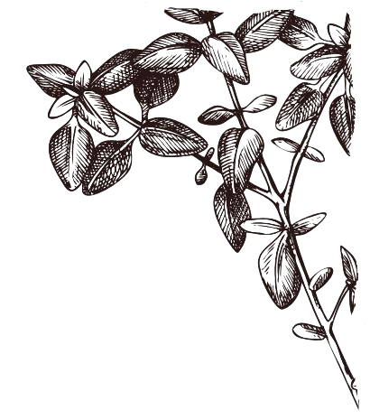

Para saber mais
Como é sempre possível aprender ainda mais sobre essas plantas e seu uso na culinária, deixamos aqui sugestões de outros sites, livros, reportagens e podcasts que podem complementar seus conhecimentos. Aproveite!
Textos
- Manual de Hortaliças Não-Convencionais do Ministério da Agricultura, Pecuária e Abastecimento
- Guia Pratico de PANC para Escolas
- Ebook de receitas PANCs da WWF
- Guia Prático de PANC
Sites e páginas no Instagram
- Jardim Comestível (várias receitas com PANCs)
- Página do Instagram do "Mato de Comer"
- Página do "Jaca Verde Panc"
- 5 espécies de PANCs para colher e comer em cada uma das 5 regiões do Brasil